Chapter 11 Graphics with ggplot2
11.1 ggplot2 introduced
ggplot2 is a package for R which allows you to produce graphics in a completely different way to base graphics. It was originally published by Hadley Wickham in 2005 and was inspired by a book called The Grammar of Graphics (hence GGplot2) written by Leland Wilkinson. Whereas the base-R graphics system is sometimes a bit, hmmmm, organically grown (i.e. having to use arrows() to draw confidence intervals), ggplot2 follows a logical framework where data visualisation is broken down into components such as the data which is used for the graph, the geometric shapes which are used to represent the data and the scales which are used to map the data to the geometric shapes. Returning to the UFO data which we used an example in chapter 8, here is the code to draw the plot in base R:
'data.frame': 907 obs. of 2 variables:
$ Reports: Date, format: "2019-03-01" "2019-02-01" ...
$ Count : int 250 195 317 237 233 266 300 357 406 226 ...plot(UFO$Count ~ UFO$Reports,
type = "l",
col = "steelblue",
xlab = "Year",
ylab = "Number of UFO reports by month",
main = "UFO reports by month since 1900")
Here is the code which will draw an equivalent graph in ggplot2. We’ll see the finished graph later but for the moment let’s look at the code.
p1 <- ggplot(data = UFO, aes(x = Reports, y = Count)) +
geom_line(colour = "steelblue") +
theme_bw() +
labs(x = "Year",
y = "Number of UFO reports by month",
title = "UFO reports by month since 1900")
p1Some things are familiar, some are not so. The first unfamilar thing is that with ggplot2 you can save your plot as an R object and if you just enter the object name it will display it in the plot window. This means that you can modify the plot once you’ve saved it as an object, which gives a degree of flexibility that’s not available with a base graphics plot. Let’s have a look at some of the code we used for the rest of the plot.
The first thing we do is use the ggplot() function to specify the data and the aesthetic for our plot. For the data you have to use a data frame (or the tidyverse equivalent, a tibble): you can’t, for example, plot two vectors in the workspace against each other as you can with base R graphics. The second argument that ggplot() takes, aes(), specifies the “aesthetic” — this is how the data are mapped to the geometric objects which constitute the plot. Here we’re doing this by telling ggplot2 which variables should constitute the x- and the y-variables in our plot. You can also have mappings of colours or plot symbol shapes to data here as well: we’ll see examples of these later on in the chapter. So far so good, but if we were to try to plot our object from just this one function call we would get an error message. That’s because we haven’t yet told ggplot2 how we want these data plotted — do we want a scatterplot, a line plot, or something more exotic?
This demonstrates how we can ask ggplot2 to draw us a line graph. We just use the plus sign to add something to our object, and then use the geom_line() function to ask for a line graph. The line is a type of geometric object and these are specified as geoms in ggplot2. Common geoms include geom_boxplot(), geom_histogram() and geom_points() which will draw boxplots, histograms and scatterplots respectively. There are many other options for geoms and a full list is here.
You can see that we’ve asked for a particular colour within our geom_line() function call. The reason it’s here rather than in the aes() call is a bit technical but essentially we’re just asking for one colour and not mapping it to something in the data: if this is the case then it goes in the geom... call. Usually.
Let’s look at what we get if we plot this graph.
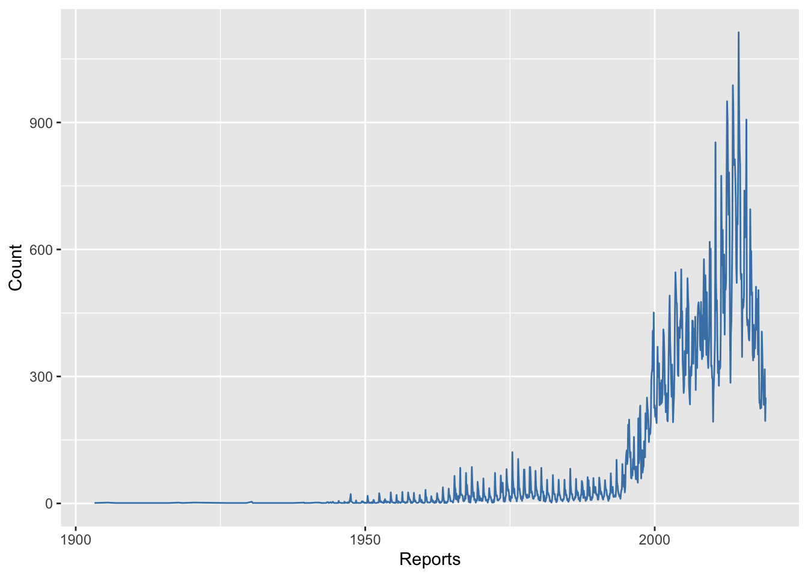
The graph is plotted on a grey background with major and minor grid lines and without lines for the axes or a box around the plot. This is the default theme for ggplot2 where the theme defines those things that affect the overall appearance of the plot: background, grid lines, font for the text and so on. Some people like this theme (theme-gray(), but I do not and my personal preference is to use another theme called theme_bw() which gives a less intrusive background. There are a number of other themes included in ggplot2 including theme_dark() with a much darker background, theme_classic() with a set of xy axes and no gridlines and theme_minimal() with some faint gridlines but not much else.
p1 <- ggplot(data = UFO, aes(x = Reports,
y = Count)) +
geom_line(colour = "steelblue") +
theme_bw()
p1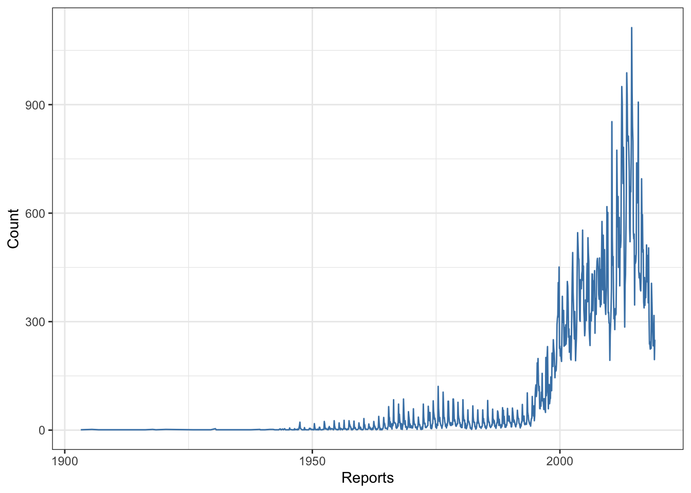
Finally, we add the axis labels and the title using labs(). You can also add individual labels separately, so xlab(), ylab() and ggtitle() will add axis labels and a title for you if you’d prefer that. Putting these together gives our finished plot:
p1 <- ggplot(data = UFO, aes(x = Reports,
y = Count)) +
geom_line(colour = "steelblue") +
theme_bw() +
labs(x = "Year",
y = "Number of UFO reports by month",
title = "UFO reports by month since 1900")
p1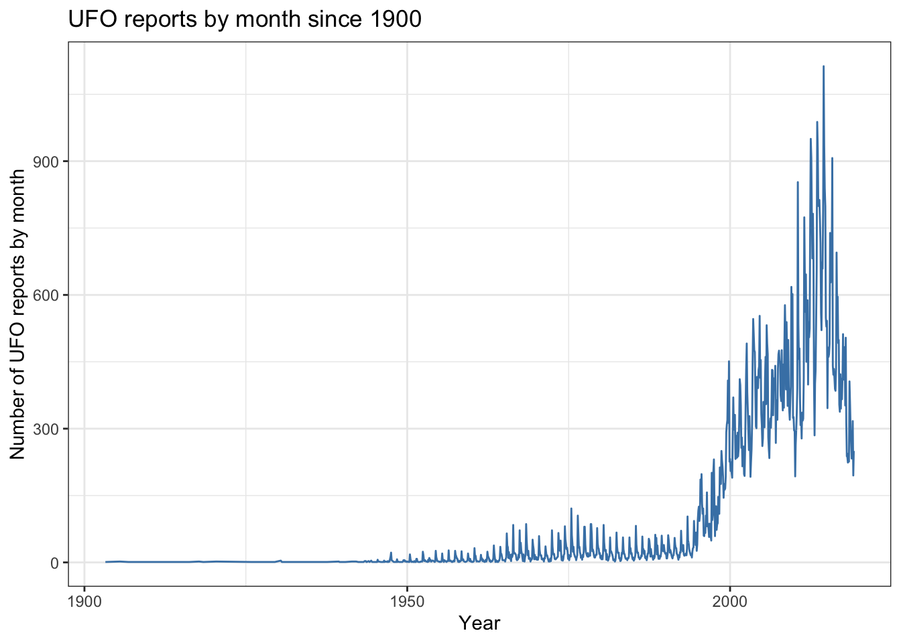
That’s a goog looking graph, and hopefully you’ve seen the logical process by which a ggplot2 graph is built up. What we’ve seen so far is:
- Specify the data which the graph is to be drawn from
- The aesthetic maps the data to the geometric objects which the graph is drawn with — in our case via telling ggplot2 which variables are plotted on which axes and what colour we want
- The geometric objects are selected using geom…
- The overall look of the graph is determined by selecting a theme, and we make sure our graph labels make sense using
labs().
Other things we haven’t seen yet are the use of further geoms to add extra layers, scaling, statistical transformations of the data, the use of coordinate systems to change the way the data are mapped onto the graph and the use of facets to produce multiple graphs split by (for example) factor levels.
Let’s start with adding extra layers. Our UFO graph is quite informative but the plotted line simply connects each data point and is very noisy because of the strong seasonal signal in these data. Rather then just doing a join-the-dots graph, maybe we should plot the data as points and then put something over the top which summarises these data. We can do the former by using geom_point() and the latter by using geom_smooth(). Let’s start with just the points
p1 <- ggplot(data = UFO, aes(x = Reports,
y = Count)) +
geom_point() +
labs(x = "Year",
y = "Number of UFO reports by month",
title = "UFO reports by month since 1900")
p1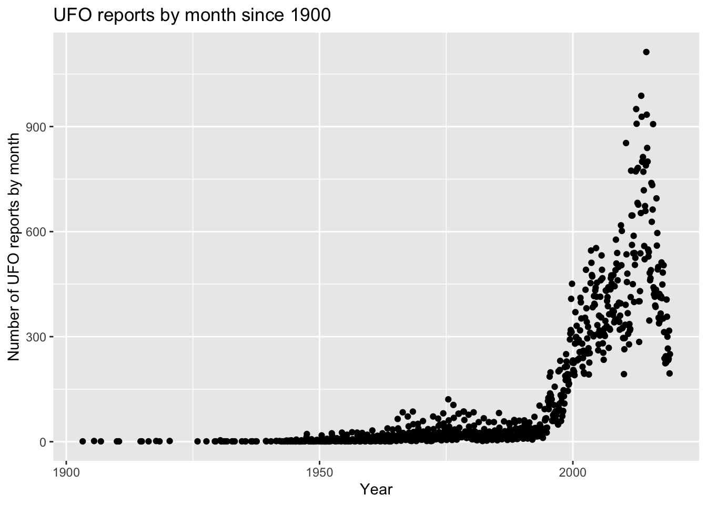
I didn’t specify a theme, a colour or a plot symbol so we get the default options for a scatterplot which you can see here. This is OK but the solid symbols mean that a lot of the data just appear as a blob where the symbols are overplotted and the black is a bit lifeless. How about this.
p1 <- ggplot(data = UFO, aes(x = Reports,
y = Count)) +
geom_point(shape = 1,
colour = "steelblue",
alpha = 0.7) +
theme_bw() +
labs(x = "Year",
y = "Number of UFO reports by month",
title = "UFO reports by month since 1900")
p1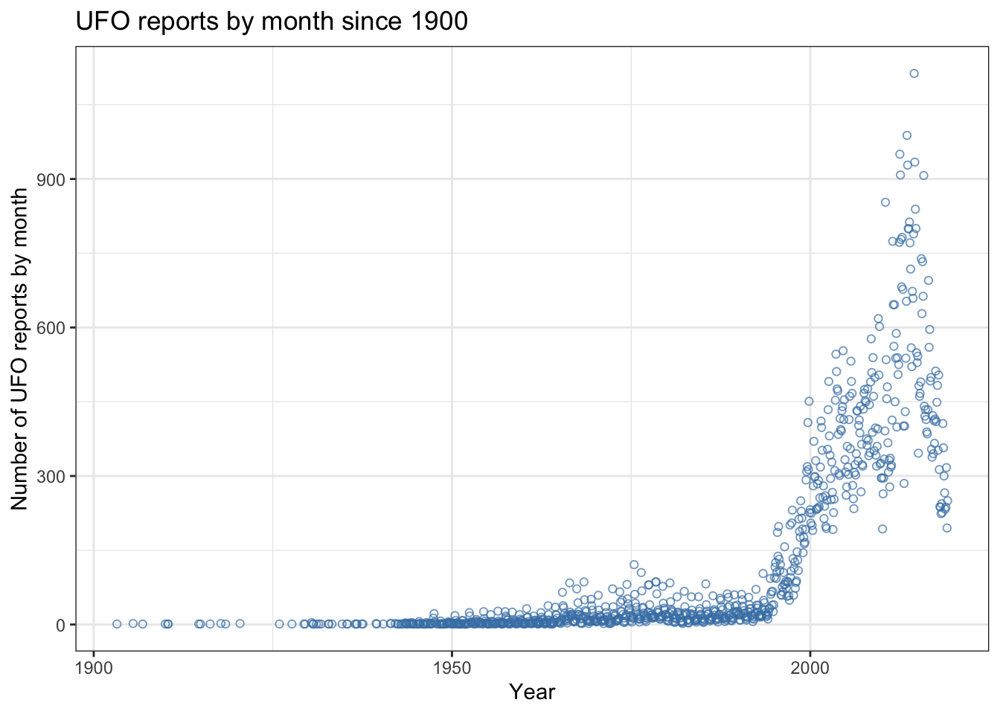
I’ve added three arguments to geom_point(): firstly shape = 1 which tells ggplot2 which plot symbol to use. The plot symbol numbering is the same as for base R graphics and here I’ve asked for symbol 1 which is the open circle. The second argument is colour = "steelblue" which is self-explanatory (NB if you prefer USA spelling ggplot2 will also accept color). Thirdly I’ve put some transparency in there using alpha = 0.7. This is a really easy way to make your points semi-transparent which is great when you’re dealing with lots of data and want to show the patterns even when there’s overplotting. The closer to zero the more transparent so alpha = 0.2 gives lots of transparency whereas alpha = 0.9 gives hardly any. We now have a nice looking scatterplot but we want to add another layer showing something that summarises what’s going on in our data. We do this by just adding a second geom... to our code like this:
p1 <- ggplot(data = UFO, aes(x = Reports,
y = Count)) +
geom_point(shape = 1,
colour = "steelblue",
alpha = 0.7) +
geom_smooth(span = 0.1,
colour = "slateblue4",
size = 0.5,
se = FALSE) +
theme_bw() +
labs(x = "Year",
y = "Number of UFO reports by month",
title = "UFO reports by month since 1900")
p1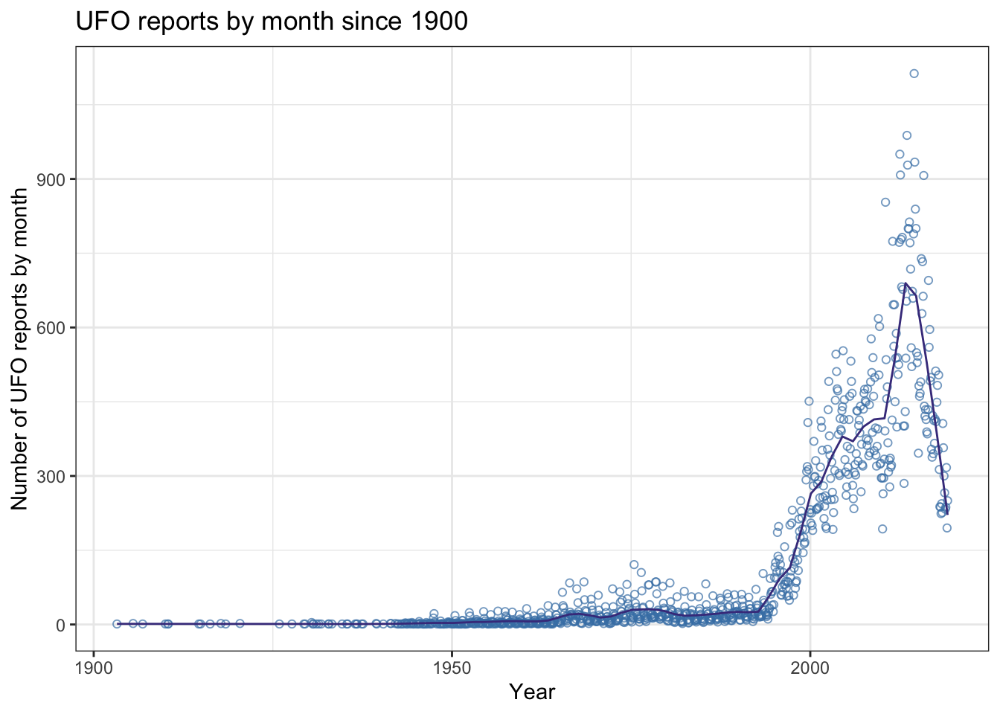
There is now a wiggly line drawn over the top of our points showing where the main trend is. You can think of this as an extra layer on the graph with the data mapped to a new geom, giving a second visualisation of the data on top of the first one.
To draw our line we used geom_smooth(). This is one of the most important options in ggplot2 because it is a massively flexible way of adding lines to a plot. The default option is to add a non-parametric smoother, a statistical method of summarising the trend in a dataset which is highly flexible and can include peaks, troughs and changes in slope. Non-parametric smoothers are great for exploratory data analysis, and also for summarising complex patterns in bivariate datasets as we have done here. The specific kind of smoother that ggplot2 is using in this case is something called a loess smooether (loess standing for locally estimated scatterplot smoothing) and you can think of it as a bunch of short regressions covering part of the dataset stitched together. Loess smoothers can be more or less smoothed depending on how much of the dataset is used for each piece, and since we have quite a complex pattern in these data I’ve gone for a less smoothed setting which means the line will follow the data quite closely: this is done by setting span = 0.1 as an argument. Other arguments specify the colour (colour = "darkblue")and ask for a fairly thin line (size = 0.5). Finally se = FALSE asks for the loess fit to be plotted without confidence intervals. geom_smooth() will plot in 95% confidence intervals for a line by default and this is often very useful and important but in this case they don’t really add a lot to the outcome.
11.2 Scaling axes and varying colour or shapes by factor levels
To illustrate this we’ll use the data on pinniped mating systems and brain sizes that was introduced in chapter 8. As a quick reminder, these data were originally published by John Fitzpatrick and coauthors in a paper on the subject of how brain size in pinnipeds (seals, walruses and sea lions) relates to whether they have a mating system where males pair up with single females or a system where individual males compete to defend groups (“harems”) of females during the mating season.
# Import data
pinniped <- read.csv("http://www.introductoryr.co.uk/Pinniped_brains.csv")
# Set up factor describing the mating system
Mating_system <- factor(ifelse(pinniped$Harem == 1, "Non harem", "Harem"))
pinniped <- data.frame(pinniped, Mating_system)
# Taking out a couple of lines with NA values to avoid warning messages
out <- which(is.na(pinniped$Male_brain))
pinniped <- pinniped[-out,]Note that we’ve combined our data into a single data frame after setting up our factor — you’ll recall that ggplot2 needs to be given all the data as a data frame which is why we’ve done this. Let’s remind ourselves of what these data look like.
pinniped_plot <- ggplot(data = pinniped,
aes(x = Male_mass, y = Male_brain)) +
geom_point()
pinniped_plot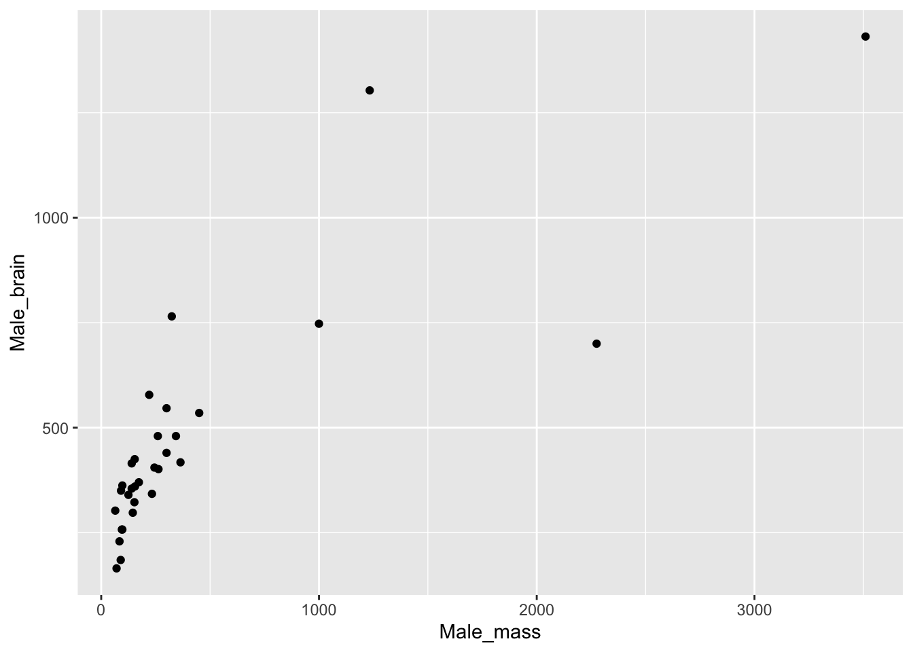
This is just a straightforward scatterplot of these data without anya attempt to alter the colours or the theme, but you can clearly see that most of the data are clustered in the bottom left-hand corner of the graph. Both variables are strongly positively skewed, and to visualise them better we need to plot their logs rather than the raw numbers. As in base R graphics, this can be done by log transforming our variables before plotting them, or by doing the log transformation in the code to generate the plot. Unlike base R, however, ggplot2 has two different options for a log transformation. One, which works on the scale, transforms the data and then plots the graph. This means that the gridlines and the axis tick locations are similar to those we’d get if we did the log transformation ourselves before plotting the graph. It also means that if we use something like geom_smooth() to add a smoother or a line, what is plotted will be based on log transformed data rather than the raw data. We’ll see what that means when we start adding lines to this graph.
The second way to plot log transformed data is by changing the coordinates: in other words the locations of the gridlines and tickmarks are decided based on the raw data, and the axes are then transformed. This is more analagous to what happens in base R when you use an argument like log = "xy" to plot log transformed data. If you use this method then if you add a smoother or a line with geom_smooth() it will have been fitted to the raw data and might look a bit unexpected.
We’ll use the scale transform by using the scale_y_continuous() and scale_x_continuous() functions.
pinniped_plot <- ggplot(data = pinniped, aes(x = Male_mass, y = Male_brain)) +
geom_point() +
scale_y_continuous(trans = "log10") +
scale_x_continuous(trans = "log10")
pinniped_plot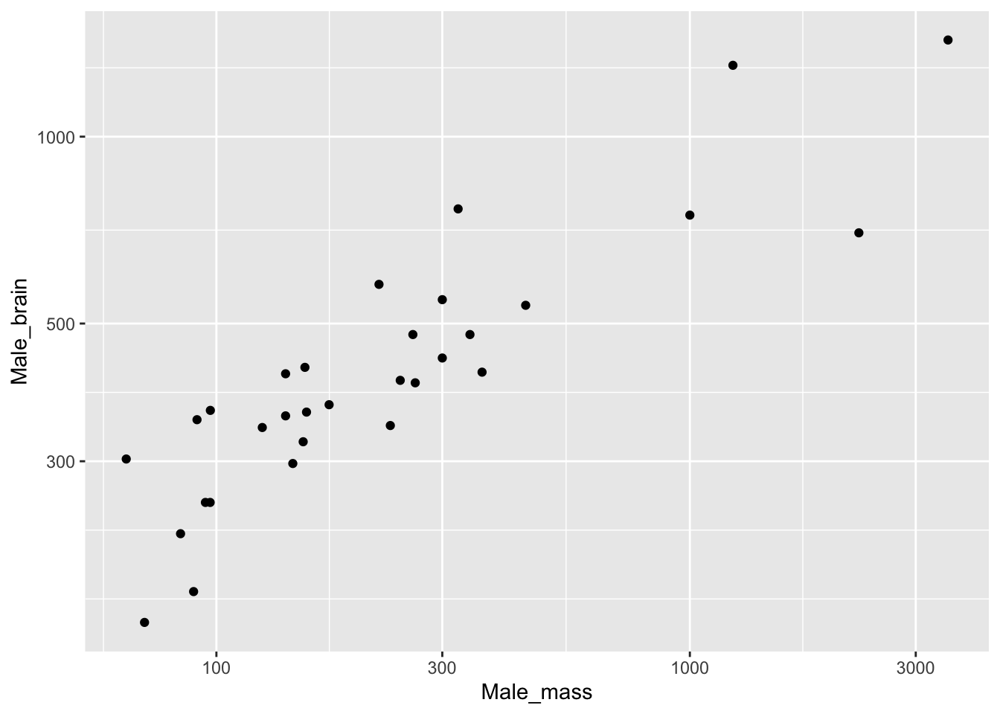
Now we’d like to colour code our data points to indicate the mating system for that species. It’s already been mentioned that we can include aesthetic mappings linking colours and plot symbols to variables in our data frame, so to draw a scatterplot with harem and non-harem breeders separated by colour we would use some code like this, which adds a mapping into the aesthetic call in the ggplot() function to map colour to the levels of Mating_system.
pinniped_plot <- ggplot(data = pinniped, aes(x = Male_mass, y = Male_brain, colour = Mating_system)) +
geom_point() +
scale_y_continuous(trans = "log10") +
scale_x_continuous(trans = "log10")
pinniped_plot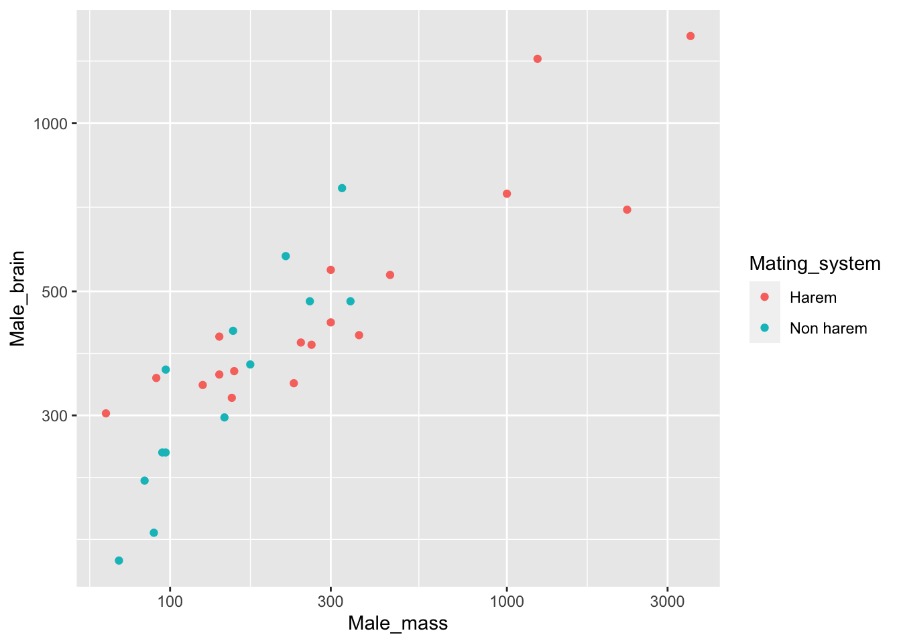
This is where ggplot2 really does better than the base R graphics. Simply by mapping the colour onto the Mating_system variable we’ve got a graph with the datapoints distinguished by colour and even better ggplot2 has drawn us a legend without even being asked to. Even better, if we add another layer the aesthetic mapping will be carried over. Let’s use geom_smooth() to add some fitted lines. To change from a loess smoother to a linear regression to fit our line we can just specify this in the function call.
pinniped_plot <- ggplot(data = pinniped, aes(x = Male_mass, y = Male_brain, colour = Mating_system)) +
geom_point() +
scale_y_continuous(trans = "log10") +
scale_x_continuous(trans = "log10") +
geom_smooth(method = "lm")
pinniped_plot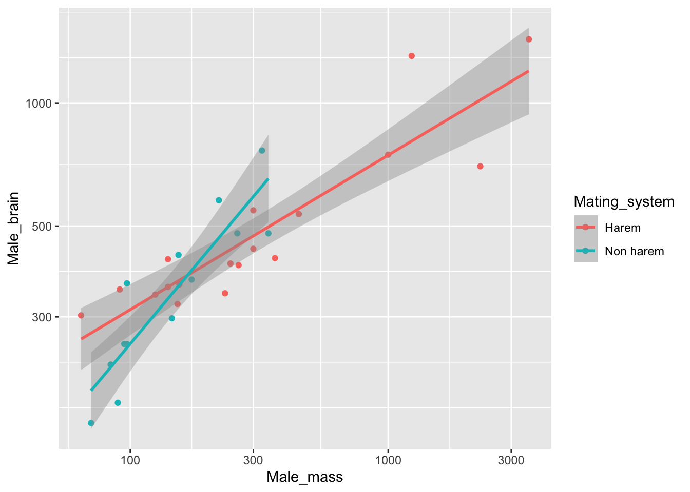
ggplot2 has calculated separate fits for the two groups of data and drawn in our fitted lines with the 95% confidence intervals indicated for each. Even better, the lines are only drawn within the range of each group of data so we don’t have any unnecessary extrapolation in our figure. This is something which is not at all straightforward in base R graohics.
Now all that remains is to make the plot nice and take it up to a publishable standard. As I’ve already indicated I don’t like the default theme for ggplot2, and I like the default colour palette even less. This is just my personal taste of course but I wouldn’t want to make anything public with that background and those colours. We can fix the theme using theme_bw() and we can fix the colours by using scale_colour_manual(). We also need some decent axis labels and a label for the legend and we can add those with labs().
pinniped_plot <- ggplot(data = pinniped, aes(x = Male_mass, y = Male_brain, colour = Mating_system)) +
geom_point() +
scale_y_continuous(trans = "log10") +
scale_x_continuous(trans = "log10") +
geom_smooth(method = "lm") +
theme_bw() +
scale_colour_manual(values = c("darkred", "steelblue")) +
labs(x = "Male body mass (Kg)",
y = "Male brain mass (g)",
colour = "Mating system")
pinniped_plot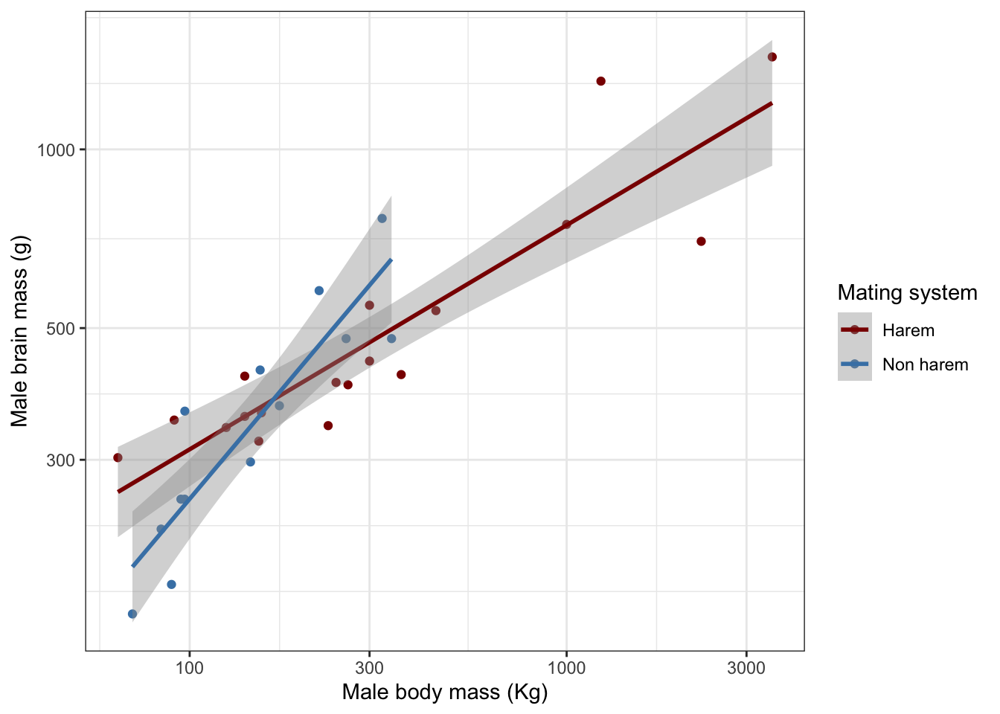
11.3 Facets
This is in my opinion the best thing about ggplot2: the way it makes it so easy to draw multiple graphs conditioned on the values of a factor. If, rather than wanting to draw the data for both mating systems on the same graph we wanted to put them on two separate ones side by side it just takes a single line of extra code.
pinniped_plot <- ggplot(data = pinniped, aes(x = Male_mass, y = Male_brain)) +
geom_point() +
scale_y_continuous(trans = "log10") +
scale_x_continuous(trans = "log10") +
geom_smooth(method = "lm") +
theme_bw() +
labs(x = "Male body mass (Kg)",
y = "Male brain mass (g)") +
facet_grid(.~ Mating_system)
pinniped_plot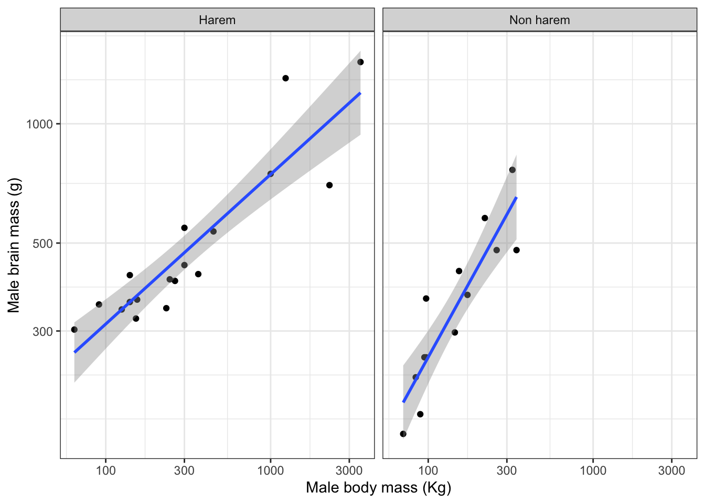
facet_grid() works by setting up a grid of new plot panels (facets). As arguments it takes a formula with the variable before the tilde specifying the factor to be used for the rows and the one after the tilde the fator to be sued for the columns. In this case we only wanted two columns and a single row so the full stop before the tilde tells ggplot2 that we’re only concerned with columns here. Nice touches include the labels for each facet and the x- and y-axis scales being the same for both plots, making comparisons easy.
11.4 Histograms
Let’s look at another example. This time we’re going to use the World_bank_data_2014.csv dataset which we used in chapter 8, which has a large amount of data on environmental, ecomomic and health issues from 186 countried around the world from 2014.
WB <- read.csv("http://www.introductoryr.co.uk/World_bank_data_2014.csv")
WB$Region <- as.factor(WB$Region)
WB$Income_group <- as.factor(WB$Income_group)
str(WB)
'data.frame': 186 obs. of 22 variables:
$ Country_Name : chr "Afghanistan" "Angola" "Albania" "Andorra" ...
$ Country_Code : chr "AFG" "AGO" "ALB" "AND" ...
$ Region : Factor w/ 7 levels "East Asia & Pacific",..: 6 7 2 2 4 3 2 3 1 2 ...
$ Income_group : Factor w/ 4 levels "High income",..: 2 3 4 1 1 4 4 1 1 1 ...
$ Population : int 33370794 26941779 2889104 79213 9214175 42669500 2912403 92562 23475686 8546356 ...
$ Land_area : num 652860 1246700 27400 470 71020 ...
$ Forest_area : num 2.07 46.51 28.19 34.04 4.53 ...
$ Precipitation : int 327 1010 1485 NA 78 591 562 1030 534 1110 ...
$ Population_density : num 51.1 21.6 105.4 168.5 129.7 ...
$ Capital_lat : int 33 -13 41 43 24 -34 40 17 -35 47 ...
$ GNP_per_Cap : int 630 5010 4540 NA 44330 12350 4140 12730 65150 50370 ...
$ Population_growth : num 3.356 3.497 -0.207 -1.951 0.177 ...
$ Cereal_yield : num 2018 888 4893 NA 12543 ...
$ Under_5_mortality : num 73.6 92.9 10 3.4 7.9 12 15.1 7.6 4 3.8 ...
$ Renewables : num 19.314 50.797 38.69 19.886 0.146 ...
$ CO2 : num 0.294 1.29 1.979 5.833 22.94 ...
$ PM25 : num 59 33 18.9 10.8 38 ...
$ Women_in_parliament : num 27.7 36.8 20 50 17.5 36.6 10.7 11.1 26 32.2 ...
$ GINI_index : num NA NA NA NA NA 41.7 31.5 NA 35.8 30.5 ...
$ Govt_spend_education : num 3.7 NA NA 3 NA ...
$ Secondary_school_enrolment: num 52.6 NA 97.7 NA NA ...
$ School_gender_parity : num 0.654 NA 0.977 NA NA ...The PM25 variable contains estimates for exposure to small atmospheric particulates: the PM 2.5 particles which are implicated in lots of public health issues. Let’s have a look at the frequency histogram for these data. Since there’s only one variable to be plotted we just have an x = in the aes() and we will use geom_histogram().
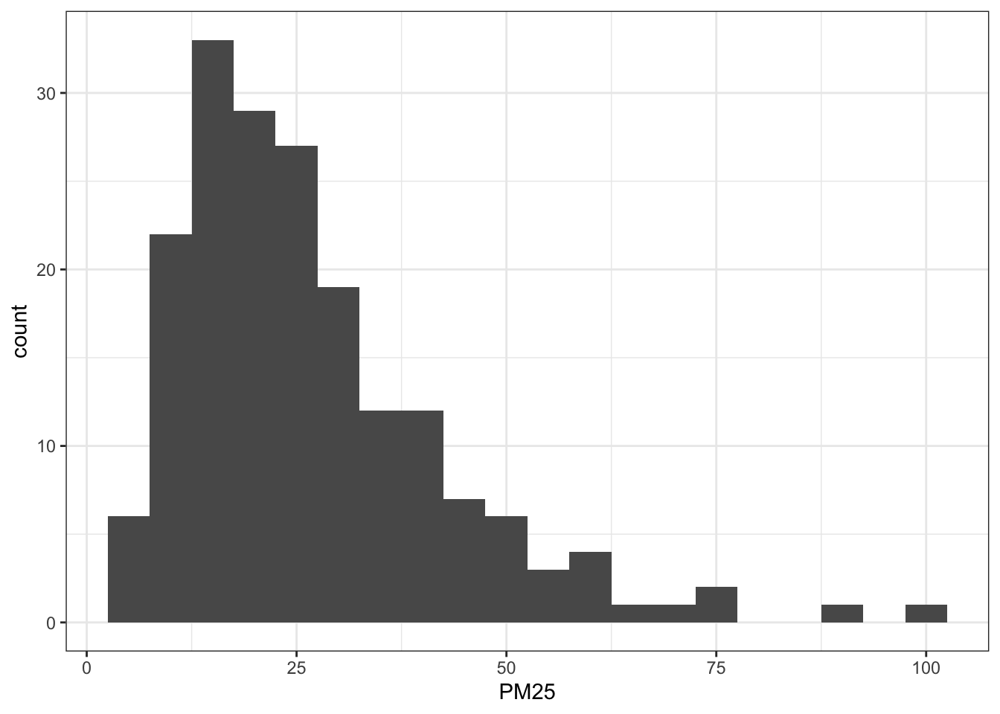
This does a nice job of plotting a frequency histogram. ggplot2 divides the data into 30 bins by default which is a bit much but it’s easy to use a different number. We know our data range from 0 to 100 so a binwidth of 5 gives us 20 bins which is a good number.
The default option here is to have no distinct lines around each bar of the histogram so that they blend into one. This arguably helps you see the shape of the frequency distribution but you might want to have somethign that resembles a base R histogram a little more, with the individual bars being more distinct. You can set the colour of the fill for each bar using fill = and the line around each with colour =. Because this is being applied to the gerom generally and isn’t mapped to a further variable it’s best to do this in the geom_histogram() function call. We also need some decent labels but that’s trivial for us now.
pm25_hist <- ggplot(data = WB, aes(x = PM25)) +
geom_histogram(binwidth = 5, colour = "grey20", fill = "grey70") +
theme_bw() +
labs(x = "PM 2.5 particulate exposure",
y = "Number of countries")
pm25_hist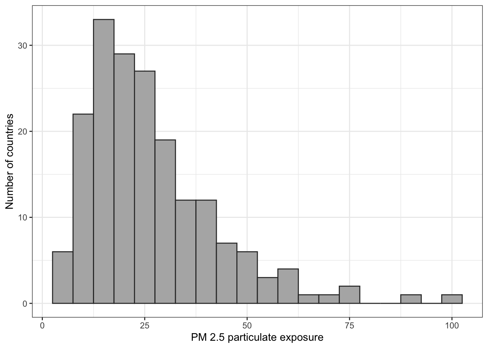
We have another variable in our WB dataset called “Income group” which divides nations into low, lower middle, upper middle and high income categories. It would be interesting to see how the frequency distribution of PM 2.5 exposure varies between these income groups so we could use the ggplot2 facet goodness to let us plot a series of histograms to compare with each other. It’s usually easier to compare histograms when they’re one above the other so we’ll use facet_grid() to make this happen. As a final point we want the factor levels in an order that makes sense rather than in alphabetical order so we’ll use the factor() function to reorder them before plotting the graph.
WB$Income_group <-
factor(
WB$Income_group,
levels = c(
"Low income",
"Lower middle income",
"Upper middle income",
"High income"))
pm25_hist <- ggplot(data = WB, aes(x = PM25)) +
geom_histogram(binwidth = 5,
colour = "grey20",
fill = "grey70") +
facet_grid(Income_group ~ .) +
theme_bw() +
labs(x = "PM 2.5 particulate exposure",
y = "Number of countries")
pm25_hist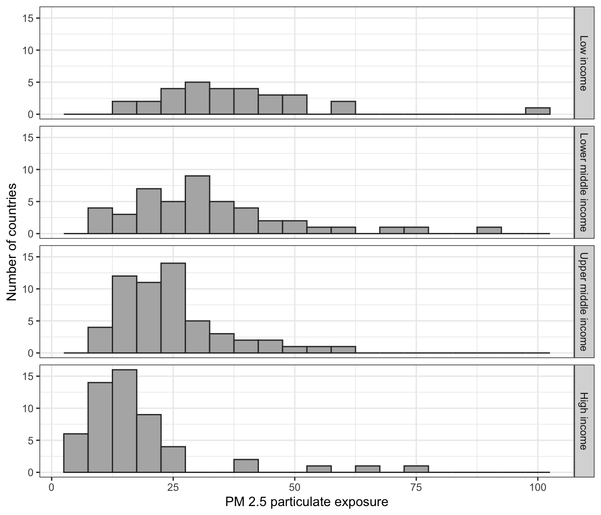 This is a nice plot and we can see how the frequency distribution of PM 2.5 exposure changes as the amount of wealth increases.
11.5 Boxplots
For a final example let’s use some other data from the worldbank dataset and draw a boxplot showing the log10 of CO2 production per capita divided by region and income. As we did before, we’ll amalgamate the two low income and the two high income classes to make a new factor with just two levels, “Low income” and “High income”.
# Make new factor
Income <- as.factor(ifelse(WB$Income_group == "High income" | WB$Income_group == "Upper middle income", "High income", "Low income"))
# Add it to the WB data frame
WB <- data.frame(WB, Income)We’ll build our ggplot2 graph with the x-variable in the aesthetic as Region, the y-variable as CO2 and we’ll use fill = Income to map the fill of the boxplots to the Income variable. We previously used fill to fill the bars in our histogram and we can use it here in just the same way we have used colour previously. Generally, if a geom has both an outline and a fill, you would use colour = to map something to the outline and fill = to map something to the fill.
CO2_plot <- ggplot(data = WB, aes(x = Region,
y = CO2,
fill = Income)) +
geom_boxplot() +
scale_y_continuous(trans = "log10") +
theme_bw()
CO2_plot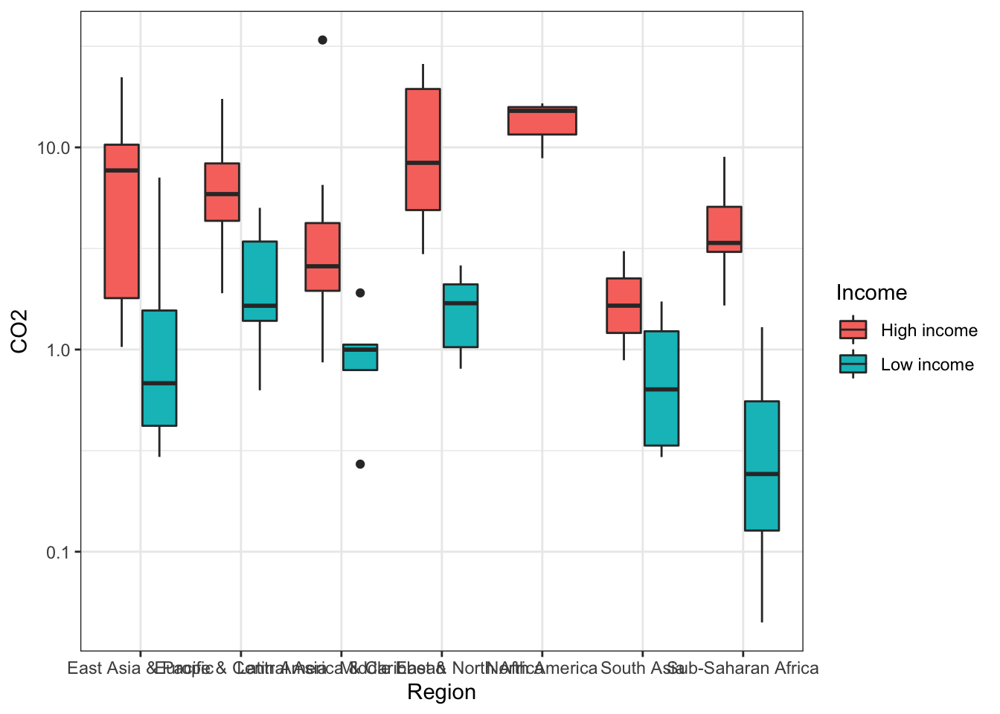
This is getting there but we need to fix some things. Firstly those colours need to be swapped out for something else. Secondly the axes need proper labels. Thirdly the labels for the tick marks on the x-axis are a mess because the region names are way too long to fit in.
To change the fill colour we can use scale_fill_manual() instead of scale_colour_manual() which we used previously. This time instead of just adding the colour names in we’ll set up our own palette and use that. This works in just the same way as it does in base R graphics.
To change the angle of the text we’ll use this code: theme(axis.text.x = element_text(angle = 45, hjust = 1)). There are a series of arguments available for theme() which let us adjust things like text colour, font, angle and so on. Here we’re adjusting the angle of the x-axis text only to 45 degrees. The hjust = 1 argument moves it down so that it’s in the right place. We’re using expression() to enable us to produce a y-axis label with subscripts in in exactly the same way that we did before with base R graphics.
palette1 <- c("cadetblue4", "orange")
CO2_plot <- ggplot(data = WB, aes(x = Region,
y = CO2,
fill = Income)) +
geom_boxplot() +
scale_y_continuous(trans = "log10") +
scale_fill_manual(values = palette1) +
theme_bw() +
theme(axis.text.x = element_text(angle = 45, hjust = 1)) +
labs(y = expression(paste(Log[10] , CO[2], " Production (tonnes)", sep = " ")))
CO2_plot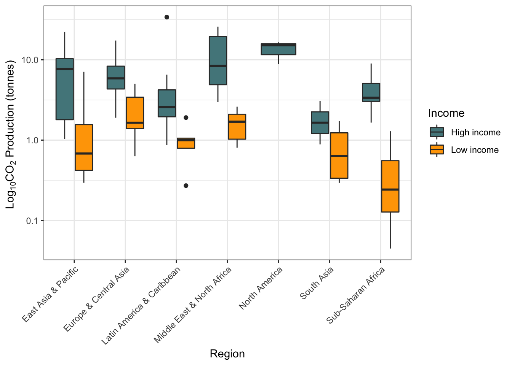
That’s a nice graph and one that we could certainly publish as is. You might like to compare it with the very similar boxplot that we produced in the section on boxplots in the first chapter on base R graphics. The final result is very similar but the two boxplots are produced in very different ways and the ggplot2 version is overall rather simpler to produce: there’s no requirement for obscure things like setting xpd = TRUE to allow the legend to be plotted outside the graph window.
11.6 Final word
This chapter has hopefully given an explanation of the underlying philosophy behind ggplot2 and shown you some useful examples of how it’s used. There is a vast amount of further information available on the package and also on the ecosystem of add-on packages that have appeared over tha past few years, and this book is not long enough to cover ggplot2 in any real detail. If you want to go further some useful resources are:
- The official ggplot2 website which has full documentation.
- Winston Chang’s R Graphics Cookbook. This is an excellent and comprehensive guide to producing graphs with ggplot2 (and some base graphics too). You can read it online for free but if you like it please consider buying a hard copy to give something back. With this available there’s really little point in my trying to produce something to rival it.
- The R Graph Gallery which is nowadays fairly strongly focussed on ggplot2 and its extensions. Look for a graph like the one you want to plot and then you can adapt the code for your own needs.
- Something you might find helpful is the BBC News ggplot2 cookbook which they made public fairly recently and which has lots of examples of really good looking graphs and the code used to make them.
As a final thought: which is better? Should you use ggplot2 or base graphics? Is it true (as I have seen people claim) that you can’t produce decent graphs with base R graphics and that if you submit base graphics to a journal they won’t accept them? The last is unquestionably untrue and really only shows that the person in question didn’t know what they were taling about. As you should have seen in the preceeding chapters it’s easy to make excellent quality graphs using base R graphics, and sometimes it’s simpler than using ggplot2, especially if you’re allergic to the ggplot2 default options like I am. Once you’ve understood ggplot2 it has an underlying logic and structure which makes a lot of sense, but it’s quite a steep learning curve and base graphics can be more accessible. So my advice is… if you aren’t likely to be making a lot of graphs, or if you just want to make quick plots for exploratory analysis then stick with base graphics. If you want to put in the work then go for ggplot2 which is, let’s face it, rapidly taking over the world, but bear in mind that there is a lot of activation energy required. Even after several years of using it I still have to spend a lot of time with my best helper for ggplot which is, of course, google.